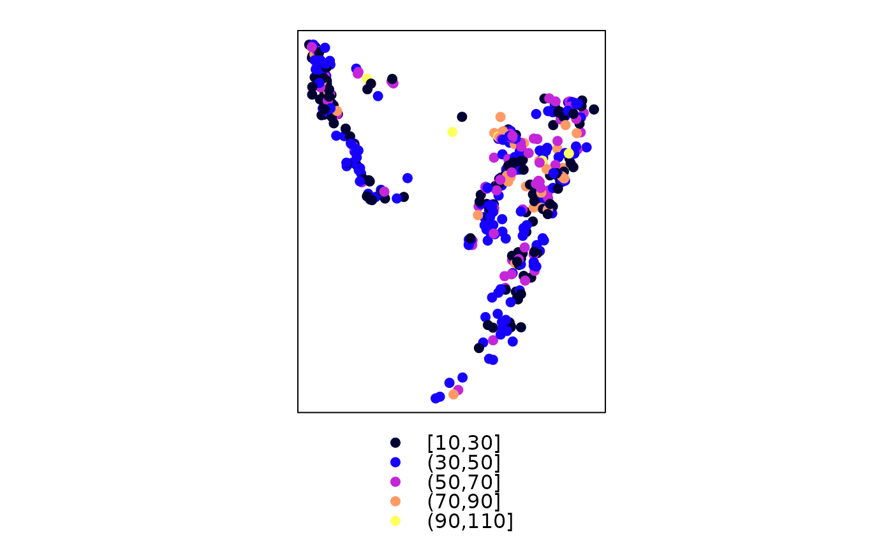

spdplyr
Michael D. Sumner
2016-11-01
dplyr verbs for Spatial
Apply dplyr verbs to the attribute data of sp objects with dplyr verbs.
See ?dplyr-Spatial' for supported verbs.
data(quakes)
library(sp)
coordinates(quakes) <- ~long+lat
library(spdplyr)
## plot a subset of locations by number of stations
quakes %>% dplyr::filter(mag <5.5 & mag > 4.5) %>% dplyr::select(stations) %>% spplot()
We can use polygons and lines objects as well.
library(maptools)
data(wrld_simpl)
## put the centre-of-mass centroid on wrld_simpl as an attribute and filter/select
worldcorner <- wrld_simpl %>%
mutate(lon = coordinates(wrld_simpl)[,1], lat = coordinates(wrld_simpl)[,2]) %>%
filter(lat < -20, lon > 60) %>%
dplyr::select(NAME)
## demonstrate that we have a faithful subset of the original object
plot(worldcorner, asp = "")
text(coordinates(worldcorner), label = worldcorner$NAME, cex = 0.6)
worldcorner
#> class : SpatialPolygonsDataFrame
#> features : 6
#> extent : -178.6131, 179.0769, -54.74973, -10.05167 (xmin, xmax, ymin, ymax)
#> coord. ref. : +proj=longlat +ellps=WGS84 +datum=WGS84 +no_defs +towgs84=0,0,0
#> variables : 1
#> # A tibble: 6 × 1
#> NAME
#> * <fctr>
#> 1 Australia
#> 2 New Caledonia
#> 3 Norfolk Island
#> 4 French Southern and Antarctic Lands
#> 5 Heard Island and McDonald Islands
#> 6 New Zealand
## we can chain together standard operations as well as dplyr specific ones
wrld_simpl %>% as("SpatialLinesDataFrame") %>% summarise(big = max(AREA))
#> class : SpatialLinesDataFrame
#> features : 1
#> extent : -180, 180, -90, 83.57027 (xmin, xmax, ymin, ymax)
#> coord. ref. : +proj=longlat +ellps=WGS84 +datum=WGS84 +no_defs +towgs84=0,0,0
#> variables : 1
#> # A tibble: 1 × 1
#> big
#> <int>
#> 1 1638094This approach is limited to the simple verbs arrange, distinct, filter, mutate, rename, select, slice, transmute, and summarize. Summarize either on its own or after a group_by collapses to a non-topological union of all sub-geometries within a group without any consideration of topology or relationships.
BEWARE: This is not a proven method for dealing with Spatial data, use at your own risk.